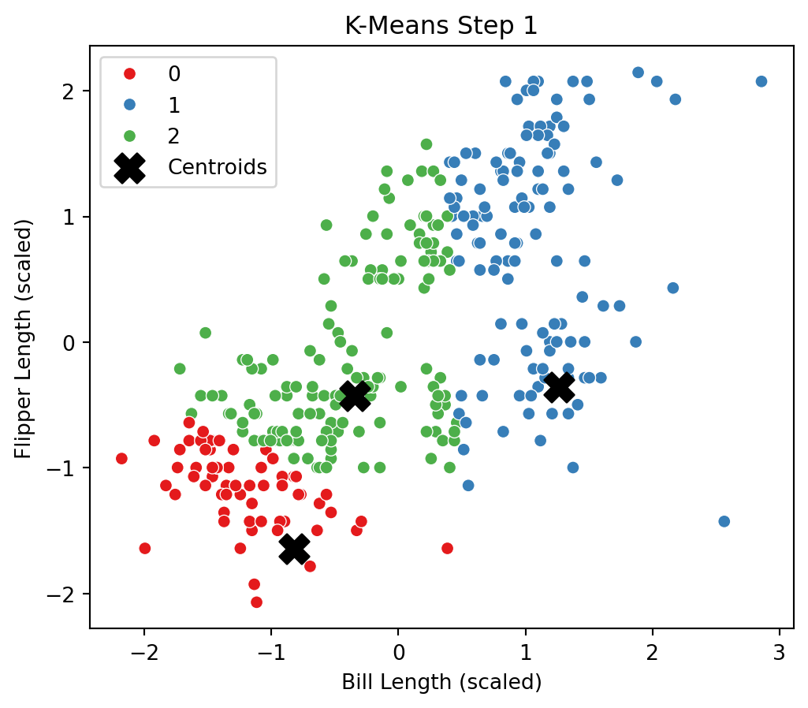
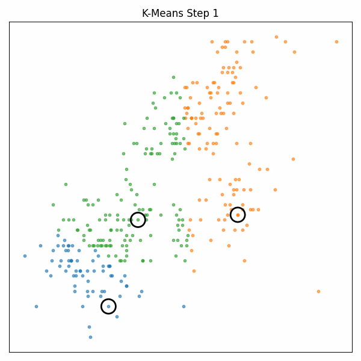

import pandas as pd
import numpy as np
import matplotlib.pyplot as plt
import seaborn as sns
from sklearn.preprocessing import StandardScaler
# Load and clean the dataset
penguins = pd.read_csv("palmer_penguins.csv")
df = penguins.dropna(subset=['bill_length_mm', 'flipper_length_mm'])
# Extract and scale features
X = df[['bill_length_mm', 'flipper_length_mm']].values
scaler = StandardScaler()
X_scaled = scaler.fit_transform(X)Clustering and Regression-Based Insights on Consumer Data
1a. K-Means Clustering on Penguins
In this section, I used the Palmer Penguins dataset to explore K-Means clustering with two features: bill_length_mm and flipper_length_mm. The goal was to group penguins based on physical traits and understand how unsupervised learning reveals natural clusters.
Key Steps:
- Data Prep: Cleaned missing values and scaled features to ensure fair distance calculations.
- Custom K-Means: Implemented the algorithm from scratch using Euclidean distance, cluster assignment, and centroid updates.
- Iteration Visualization: Plotted results after each iteration to show how the algorithm converges.
- Scikit-Learn Comparison: Validated results by comparing with the built-in
KMeansimplementation. - Optimal K: Used the Elbow Method and Silhouette Scores to find the ideal number of clusters.
- Bonus GIF: Created an animated visualization to show the clustering process step-by-step.
This hands-on implementation deepened my understanding of clustering logic and how initial centroids evolve into stable groups.
# Helper functions for K-means
def euclidean(a, b):
return np.sqrt(np.sum((a - b)**2))
def assign_clusters(X, centroids):
return np.array([np.argmin([euclidean(x, c) for c in centroids]) for x in X])
def compute_centroids(X, labels, k):
return np.array([X[labels == i].mean(axis=0) for i in range(k)])
def kmeans_with_plots(X, k, max_iters=5):
np.random.seed(42)
centroids = X[np.random.choice(len(X), k, replace=False)]
for step in range(max_iters):
labels = assign_clusters(X, centroids)
new_centroids = compute_centroids(X, labels, k)
# Plot the current step
plt.figure(figsize=(6, 5))
sns.scatterplot(x=X[:, 0], y=X[:, 1], hue=labels, palette='Set1')
plt.scatter(centroids[:, 0], centroids[:, 1], c='black', marker='X', s=200, label='Centroids')
plt.title(f"K-Means Step {step + 1}")
plt.xlabel("Bill Length (scaled)")
plt.ylabel("Flipper Length (scaled)")
plt.legend()
plt.show()
if np.allclose(centroids, new_centroids):
print("Converged.")
break
centroids = new_centroids
return labels, centroids# Run the algorithm with 3 clusters
labels, centroids = kmeans_with_plots(X_scaled, k=3)

# Compare with sklearn's KMeans
from sklearn.cluster import KMeans
model = KMeans(n_clusters=3, random_state=42)
model.fit(X_scaled)
labels_sklearn = model.labels_
# Plot comparison
plt.figure(figsize=(6, 5))
sns.scatterplot(x=X_scaled[:, 0], y=X_scaled[:, 1], hue=labels_sklearn, palette='Set2')
plt.scatter(model.cluster_centers_[:, 0], model.cluster_centers_[:, 1], c='black', marker='X', s=200)
plt.title("Sklearn KMeans Result")
plt.xlabel("Bill Length (scaled)")
plt.ylabel("Flipper Length (scaled)")
plt.legend()
plt.show()from sklearn.cluster import KMeans
from sklearn.metrics import silhouette_score
import matplotlib.pyplot as plt
# Initialize result containers
wss = [] # within-cluster sum of squares
silhouette_scores = []
K_range = range(2, 8) # K from 2 to 7
# Loop through K values
for k in K_range:
model = KMeans(n_clusters=k, random_state=42)
model.fit(X_scaled)
wss.append(model.inertia_) # inertia_ is the WSS
silhouette_scores.append(silhouette_score(X_scaled, model.labels_))# Plot WSS (Elbow Method) and Silhouette Score
fig, ax = plt.subplots(1, 2, figsize=(12, 5))
# Elbow Method
ax[0].plot(K_range, wss, marker='o')
ax[0].set_title("Elbow Method (WSS)")
ax[0].set_xlabel("Number of Clusters (K)")
ax[0].set_ylabel("Within-Cluster Sum of Squares")
# Silhouette Score
ax[1].plot(K_range, silhouette_scores, marker='o', color='green')
ax[1].set_title("Silhouette Scores")
ax[1].set_xlabel("Number of Clusters (K)")
ax[1].set_ylabel("Silhouette Score")
plt.tight_layout()
plt.show()
K-Means Animation with Colorful Clusters
import pandas as pd
import numpy as np
import matplotlib.pyplot as plt
import seaborn as sns
import os
import imageio
from sklearn.preprocessing import StandardScaler
# Load and clean data
df = pd.read_csv("palmer_penguins.csv").dropna(subset=['bill_length_mm', 'flipper_length_mm'])
X = df[['bill_length_mm', 'flipper_length_mm']].values
X_scaled = StandardScaler().fit_transform(X)
# Output folder
gif_dir = "gif_frames"
os.makedirs(gif_dir, exist_ok=True)
# Helper functions
def euclidean(a, b):
return np.sqrt(np.sum((a - b) ** 2))
def assign_clusters(X, centroids):
return np.array([np.argmin([euclidean(x, c) for c in centroids]) for x in X])
def compute_centroids(X, labels, k):
return np.array([X[labels == i].mean(axis=0) for i in range(k)])
# Main animation function
def animate_kmeans(X, k=3, max_iters=10):
np.random.seed(42)
centroids = X[np.random.choice(len(X), k, replace=False)]
for step in range(max_iters):
labels = assign_clusters(X, centroids)
new_centroids = compute_centroids(X, labels, k)
plt.figure(figsize=(6, 6))
for i in range(k):
cluster_points = X[labels == i]
plt.scatter(cluster_points[:, 0], cluster_points[:, 1], s=10, alpha=0.6)
plt.scatter(centroids[:, 0], centroids[:, 1], c='none', edgecolor='black', s=300, marker='o', linewidths=2, label='Centroids')
plt.title(f"K-Means Step {step + 1}")
plt.xticks([]); plt.yticks([])
plt.tight_layout()
plt.savefig(f"{gif_dir}/frame_{step:02d}.png", dpi=100)
plt.close()
if np.allclose(centroids, new_centroids):
print(f"Converged at step {step + 1}")
break
centroids = new_centroids
# Run the function
animate_kmeans(X_scaled, k=3)Create the GIF
# Combine saved frames into a GIF
images = []
frame_files = sorted([f for f in os.listdir(gif_dir) if f.endswith(".png")])
for file in frame_files:
img = imageio.imread(os.path.join(gif_dir, file))
images.append(img)
gif_path = "kmeans_penguins.gif"
imageio.mimsave(gif_path, images, duration=0.8)
print("GIF created at:", gif_path)GIF created at: kmeans_penguins.gif/var/folders/sn/qsyx4jm96k7_sk9l3hfkp_b40000gn/T/ipykernel_21055/1540753262.py:6: DeprecationWarning: Starting with ImageIO v3 the behavior of this function will switch to that of iio.v3.imread. To keep the current behavior (and make this warning disappear) use `import imageio.v2 as imageio` or call `imageio.v2.imread` directly.
img = imageio.imread(os.path.join(gif_dir, file))Final Animated K-Means GIF

Takeaways from K-Means
This exercise helped me understand how K-Means clustering works from the ground up — not just by applying a built-in function, but by writing the logic myself and visualizing how clusters evolve over time.
The animation illustrates how data points are reassigned and how centroids move until convergence. Comparing the custom version to scikit-learn confirmed that my implementation was accurate.
Using the Elbow Method and Silhouette Score, I found that 3 clusters best balanced compactness and separation in the penguin dataset. Overall, this section demonstrated how unsupervised learning can uncover hidden structure in real-world data — even with just two features.
2b. Key Drivers Analysis
2b. Key Drivers Analysis – Load and Prepare Data
import pandas as pd
from sklearn.preprocessing import StandardScaler
# Load data
df = pd.read_csv("data_for_drivers_analysis.csv")
# Select features and target
X = df[['trust', 'build', 'differs', 'easy', 'appealing', 'rewarding', 'popular', 'service', 'impact']]
y = df['satisfaction']
# Standardize predictors for regression
scaler = StandardScaler()
X_scaled = scaler.fit_transform(X)
X_scaled_df = pd.DataFrame(X_scaled, columns=X.columns)If you want a challenge, add additional measures to the table such as the importance scores from XGBoost, from a Neural Network, or from any additional method that measures the importance of variables.
2b. Key Drivers Analysis
We analyze the drivers of satisfaction using multiple techniques. This includes: - Pearson correlations - Standardized linear regression coefficients - Random Forest feature importances
import pandas as pd
from sklearn.linear_model import LinearRegression
from sklearn.ensemble import RandomForestRegressor
from sklearn.preprocessing import StandardScaler
# Load the data
df = pd.read_csv("data_for_drivers_analysis.csv")
# Define predictors and target
X = df[['trust', 'build', 'differs', 'easy', 'appealing', 'rewarding', 'popular', 'service', 'impact']]
y = df['satisfaction']
# 1. Pearson Correlations
pearson_corr = X.corrwith(y)
# 2. Standardized Linear Regression Coefficients
scaler = StandardScaler()
X_scaled = scaler.fit_transform(X)
linreg = LinearRegression().fit(X_scaled, y)
std_coefs = pd.Series(linreg.coef_, index=X.columns)
# 3. Random Forest Gini Importance
rf = RandomForestRegressor(random_state=42)
rf.fit(X, y)
rf_importance = pd.Series(rf.feature_importances_, index=X.columns)
# Combine all results
results_df = pd.DataFrame({
'Pearson Correlation': pearson_corr,
'Standardized Coefficient': std_coefs,
'Random Forest Gini Importance': rf_importance
}).round(3).sort_values("Pearson Correlation", ascending=False)
results_df| Pearson Correlation | Standardized Coefficient | Random Forest Gini Importance | |
|---|---|---|---|
| trust | 0.256 | 0.136 | 0.156 |
| impact | 0.255 | 0.150 | 0.141 |
| service | 0.251 | 0.104 | 0.130 |
| easy | 0.213 | 0.026 | 0.100 |
| appealing | 0.208 | 0.040 | 0.086 |
| rewarding | 0.195 | 0.006 | 0.101 |
| build | 0.192 | 0.023 | 0.102 |
| differs | 0.185 | 0.033 | 0.090 |
| popular | 0.171 | 0.019 | 0.095 |